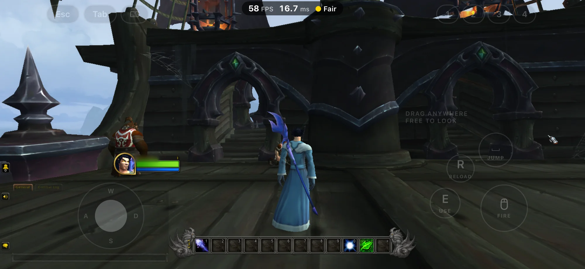
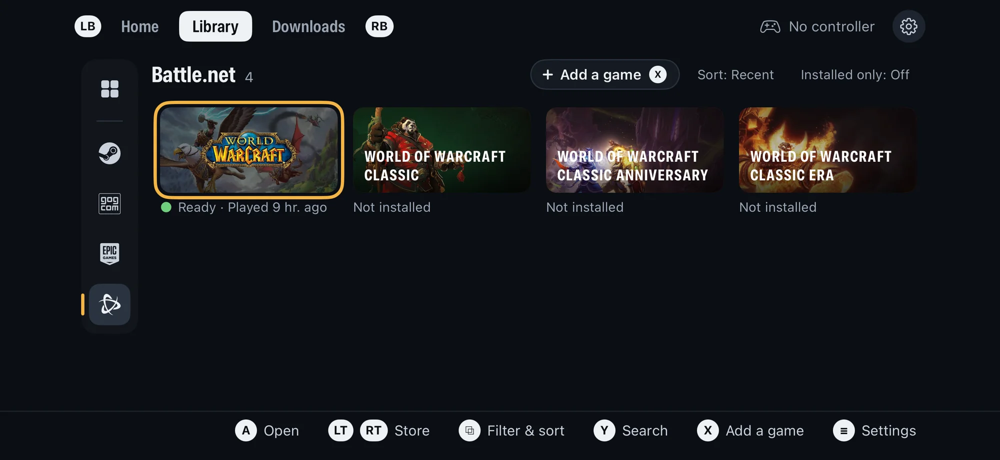
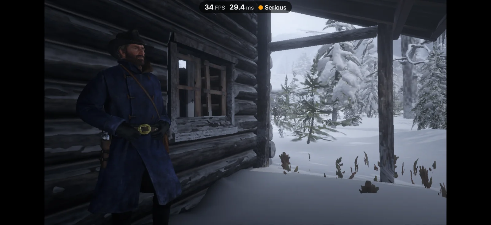
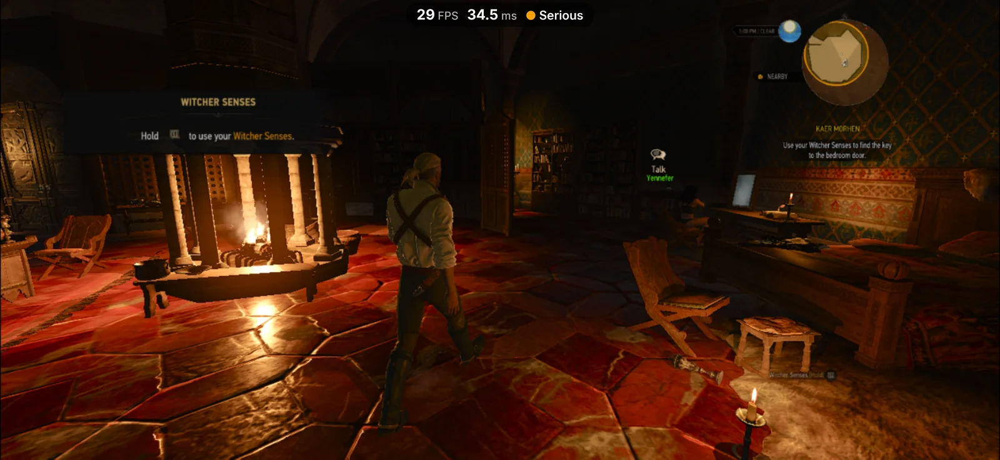
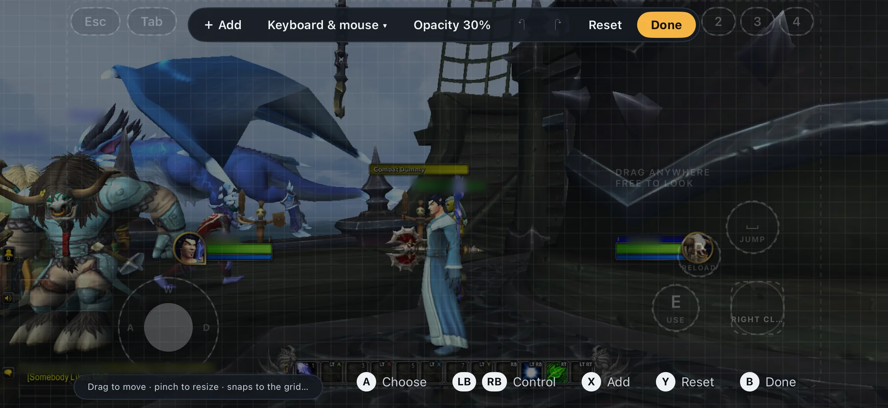
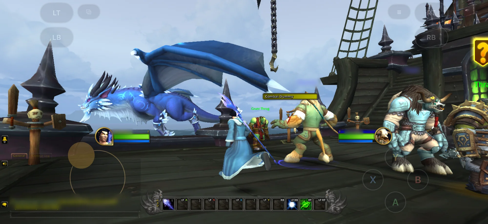
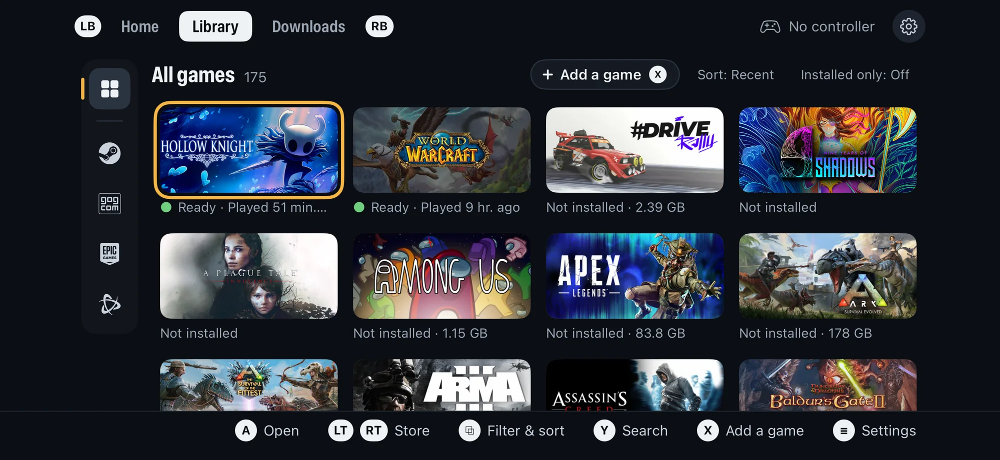

0.5.0 ·
Playport 0.5.0: World of Warcraft, Red Dead Redemption 2, The Witcher 3: Wild Hunt – Remastered and touch controls
This is the big one. World of Warcraft is on your iPhone. Install it straight from Blizzard through Playport's new Battle.net store, sign in and step into Azeroth. Red Dead Redemption 2 rides out of Arthur's cabin, The Witcher 3: Wild Hunt – Remastered plays in Kaer Morhen, and no controller is needed any more: on-screen touch controls with three layouts, a full layout editor, a touch keyboard, controller mapping and gyro aim. Add a redesigned Library, a performance overlay and Vulkan for every game.
❤️ Playport is free, and it stays free. If it put a PC game in your pocket, please consider supporting it on Ko-fi. Getting World of Warcraft, Red Dead Redemption 2 and The Witcher 3 running on a phone took a lot of work, and every donation buys time for the next release: more games and more fixes.
A donation is a gift: it buys no licence, no extra rights and no different build, and everyone may keep sharing Playport under its licence.
Updated IPA (2 November 2026). The 0.5.0 IPA was replaced with a build that adds three fixes:
- 32-bit games that unpack their own code at start-up (The Binding of Isaac: Rebirth, The Witcher 2) no longer crash before their first frame.
- Playport's Steam client now gives a game Steam's ownership ticket, so The Witcher 2's DRM check passes.
- A tap on a launcher's window goes to what you see under your finger: The Witcher 2 launcher's Launch game works.
If you installed 0.5.0 before this, download it again. SHA256SUMS lists the new files.

Highlights
⚔️ World of Warcraft, from Battle.net
Battle.net is now a store in Playport, next to Steam, GOG and Epic Games, and World of Warcraft shows in everyone's Library. No Battle.net app and no sign-in in Playport: pick the game, press Install, and Playport downloads it from Blizzard's own servers.
- Retail, Classic, Classic Era and Classic Anniversary, each with a region picker (US, Europe, Korea or Taiwan; your phone's region by default) and a language. Playport checks the free space before it starts and installs through Downloads, with pause, resume and cancel.
- Always up to date: every Play checks for a new build first and updates through Downloads, then plays. Check for update sits on the game's page too.
- The game signs itself in, as on a PC. The in-game menu's new Type text opens a field over the game for your email, password and authenticator code, with paste and AutoFill.
- It plays. In our testing World of Warcraft reaches its login screen within about 45 seconds of Play and runs in the world at 55–60 FPS.
- Your game, untouched: Playport runs Blizzard's own Windows client through its translator and changes none of the game's files and none of its code in memory. Before the first Play it tells you plainly that Blizzard does not support Playport.

🤠 Red Dead Redemption 2 rides
Press Play and Rockstar's own launcher starts, signs in, hands the game its ticket and gets out of the way. Social Club runs on Rockstar's own components, so the game stays signed in and saves as it should. One press on Story and you are in Arthur's cabin, on the frontier, on a phone.

🐺 The Witcher 3: Wild Hunt – Remastered plays
The remastered 4.x build of The Witcher 3 used to stop the moment it started: it needs AVX instructions the phone could not offer and asks for far more memory space than an iPhone app gets. Playport now handles both, and Geralt is back in Kaer Morhen, on the game's Direct3D 12 renderer. The classic 1.32 build still plays as before.

🎮 On-screen controls: play with nothing but the phone
No controller? Playport draws its on-screen controls over the game. Connect a controller and they step aside; disconnect it and they come back (Settings › Controls: Automatic, Always or Never).
- Three layouts, plus Off: Gamepad (sticks, d-pad, A/B/X/Y, bumpers, triggers, View and Menu), Keyboard & mouse (a W A S D stick, drag anywhere free to look, key caps around your thumb) and Point & click (tap to click or use it as a trackpad, with a magnifier for small targets, plus right click, hover, scroll, keys and Esc).
- A three-finger tap anywhere opens Playport's in-game menu, with any layout. The first time the controls appear on their own, a toast says so.
- The layout editor: add, move, resize, duplicate and remove controls on a grid with snapping guides, undo, reset and switch presets, by touch or with a controller, over the paused game or from Game options › Controls. Each game keeps its own layout and its own opacity.
- A suggested starting layout: a game that never asks for a controller in its first 20 seconds is offered Keyboard & mouse, once.
- A touch keyboard over the game, with F keys, arrows and sticky Shift, Ctrl and Alt, for consoles, names and the keys a layout lacks.
- Any controller as a keyboard and mouse: Game options › Controls › Controller maps every button, stick, trigger and gyro to a controller input, a key with modifiers, a mouse button, mouse movement or the wheel, or a Playport action. Pick As a controller, As keyboard & mouse or Custom.
- Gyro aim: aim by moving the phone, or a DualSense, DualShock 4 or Switch Pro controller, as the mouse or the right stick, per game, with sensitivity, smoothing and a test area to try it before you play.


📚 A redesigned Library
The stores are now a column of icons down the Library's left: All, Steam, GOG, Epic Games and Battle.net, every one always there (a store you are signed out of is dimmed). The chosen store's name and game count sit above the grid, and Installed only narrows any of them with one tap. With a controller, press left from the first column to reach the stores, or step through them from anywhere with LT and RT.

📊 A performance overlay
A small pill at the top of the game shows the frame rate, the frame time and your phone's thermal state. Turn it on from the in-game menu or Settings › Graphics, and it stays on for every game. It replaces Apple's Metal HUD, which cost CPU time on every frame.
Also new
- Vulkan is every game's graphics backend. Direct3D 9, 10, 11 and 12 now run on Vulkan over Metal by default. DXMT stays one choice away in Settings › Graphics › Direct3D or on the game's page.
- Quicker launches: shaders are compiled faster for Metal on iOS 27, and what the graphics backends and the code translator have done is kept on disk, so a second launch skips the first one's work. Settings › Storage › Shader cache shows the space and clears it.
- OpenGL games run, through Mesa's Zink on Vulkan, in 64-bit and 32-bit games alike.
- More room for big games: each Play's memory is planned from your phone's memory and the game's needs, freed memory is reused, and Settings › Graphics › Donor memory (Auto by default) lets a game use more than the app alone could hold.
- Steam for 32-bit games too: Playport's own Steam client now serves 32-bit games the same sign-in, ownership check and online tickets as 64-bit ones. Repair fetches missing Steamworks Shared files.
- Games get what they need, from Play: an Installing dependencies step runs a game's own prerequisite installer once, fetches Steam's or GOG's redistributables, and carries Wine Mono for .NET games.
- Publisher launchers: Rockstar's launcher runs for the games that need it, and a game's own launcher and dialog windows show instead of an empty screen.
- Type text in the in-game menu sends typing, paste and AutoFill to the game's focused field, with a password mode.
- Graphics choices are cleaner: Aspect ratio and Resolution are separate, and a game can carry its own compatibility defaults (Super Meat Boy's 16:9, Assassin's Creed's Keyboard & mouse layout).
- Screenshot works over Vulkan games, and games that change display mode keep showing.
- Settings scrolls on a landscape phone; Storage lists Steamworks Shared, the shader cache and the translator's cache with their sizes.
- Newer components: Wine 11.20 with Valve's latest Proton Wine changes, and current FEX (the translator that runs x86 code on the phone), DXMT, DXVK, vkd3d-proton and Mesa.
Games
The compatibility list carries every game we and players have tried. Running since 0.4.0:
- Runs: Among Us, Assassin's Creed: Director's Cut Edition, BioShock (GOG), Monster Train (GOG), Duck Paradox (GOG), Spelunky (GOG), Tomb Raider: Anniversary (GOG), Super Meat Boy (Epic), Soccer Online: Ball 3D, #DRIVE Rally, Castle Crashers (demo), Cat Mail Co. (demo) and Football Manager 2022's Resource Archiver.
- Runs, with issues listed on their pages: Counter-Strike and Half-Life (OpenGL), Neverwinter Nights: Enhanced Edition (GOG), Tomb Raider (2013), DiRT 3 Complete Edition, House of Golf 2 (Epic), and the three in the highlights: World of Warcraft, Red Dead Redemption 2 and The Witcher 3: Wild Hunt – Remastered.
Good to know
- World of Warcraft needs your Battle.net account with an active subscription; the game's own login checks it. Blizzard does not support Playport, and an action on your account is possible: Playport asks you to accept that once before the first Play.
- World of Warcraft is big: retail needs about 132 GB of free space, Classic about 80 GB and Classic Era about 5 GB. Our testing covered retail. Busy cities and raids may run slower than the open world.
- Red Dead Redemption 2 and The Witcher 3: Wild Hunt – Remastered push the phone to its limits. Both run close to the app's memory limit and need the increased memory limit from your sideloader. Both heat the phone, and their frame rate drops as it warms; expect long loads and hitches. Red Dead Redemption 2 installs about 120 GB, and we test Story mode only, never Red Dead Online. In bright light some highlights look wrong (a white beard brim, a red ear).
- Vulkan is the default now. If a game looks or behaves worse than on 0.4.0, switch it to DXMT on its page (Game options › Graphics › Direct3D) and tell us which game.
- On-screen controls: without a controller, the three-finger tap is the only way into the in-game menu. In some games' menus a Point & click tap moves the highlight without opening the item (Portal 2's). A game may show controller prompts while the layout is Off. Gyro aim drives the game's own stick or mouse, so a game's own aim settings still apply.
- Big games keep needing memory, and a game that wants more than the phone can hold still ends.
- Tested on one phone (iOS 27.2). If a game misbehaves, Report a problem on its page shares one zip with its logs.
- Your games, saves and logins are untouched by this update; install over 0.4.0.
Install
Download Playport-0.5.0.ipa and sideload it with your own Apple ID, keeping the
increased memory limit and the JIT helper extension. If you have an earlier version,
install over it: your games, saves and logins stay. Bring your own games from Steam, GOG,
Epic Games or Files, or install World of Warcraft from Battle.net.
The complete Corresponding Source of this exact build, the notices and the rebuild
instructions are attached as Playport-0.5.0-source.tar, NOTICES.tar and
INSTALL-REBUILD.tar. SHA256SUMS covers every file.
0.4.0 ·
Playport 0.4.0: GOG, Epic Games and your own games
Playport is no longer only for Steam. Sign in to GOG or Epic Games and install your games from there, or bring any DRM-free PC game from Files. Games now sign in to their store as they would on a PC.
Highlights
🛒 GOG and Epic Games
In Settings › Accounts, next to Steam, you can now sign in to GOG and Epic Games (the setup checklist's Accounts step offers all three). Your Windows games from each store show up in the Library, with their own filter and the store's artwork.
- Install, Update, Verify and Repair work just as they do for Steam, through the same Downloads queue. When a store has a newer build, the game's page shows Update.
- If Epic's sign-in asks you to do something first, such as accept an updated privacy policy, the sign-in sheet tells you what. Do that on Epic's site, then press Try again.
- Games that use anti-cheat or another company's launcher are refused before the install, and their page says why.
🔑 Games sign in to their store
A game now gets what its store's launcher would give it, with nothing to set up:
- Epic: every Epic game starts signed in to your Epic account, including games that check you own them. Games using Epic Online Services sign in too: Snakebird Complete reaches its menu signed in.
- Steam: games get the tickets Steam gives them on a PC, so online sign-ins through Steam work. Valheim logs in to its online service this way.
- GOG: games built with GOG Galaxy sign in to it. Moonscars signs in.
- Sign-in pages in a panel. When a game opens a web page, such as Epic's "Allow" page the first time an online game signs in, it appears in a panel over the game; close it to go back to the game.
📁 Add a game from Files
Have a DRM-free PC game already? Press X in the Library, or choose Add a
game, and pick its folder or a .zip from Files. Playport copies it into its
own drive and adds it to your Library under Local. Pick the game's .exe on
its page if Playport doesn't find it.
Installers (setup.exe) are not run: pick the installed game's folder instead.
For GOG games, use the GOG account. It needs no installer.
🚪 Death's Door runs on
Some Unity games, such as Death's Door, quit after about 14 seconds because Windows ran out of address space for them. Playport now places those allocations where there is room, and Death's Door plays into the game.
Also new
- iOS 26.0 fix: 0.3.3 closed at launch on iOS 26.0.x. It starts again.
- Steam demos show in your Library.
- Report a problem shares one zip with the game's logs.
- A Memory step on the first-run checklist shows whether your sideloader kept the increased memory limit. How to fix says which sideloaders keep it. The setup also explains why it needs pairing and LocalDevVPN.
- Online games connect more often: web connections trust the usual certificates, and games see the phone's network instead of thinking it is offline.
- Faster and steadier: quicker thread synchronisation and code translation, a smoother Vulkan path, and a fix for a rare freeze in Hollow Knight's menus.
- Newer components: Wine 11.19 with Valve's latest Proton Wine changes, and current FEX, DXMT, DXVK, vkd3d-proton and Mesa.
New guides
The README and playport.dev now walk you through setup:
- Install, by sideloader. Which sideloaders keep the increased memory limit (AltStore Classic 2.2 or later, Impactor and Xcode do; SideStore with a free Apple ID does not), and why it matters: without it an 8 GB iPhone gives Playport about 3.3 GB.
- SideStore: when Memory has no tick. A one-time fix with GetMoreRam that adds the limit to Playport's App ID; SideStore's weekly refresh then keeps it.
- Why pairing, JIT and LocalDevVPN, and Do I need a computer? (once, to install; after that it depends on your sideloader).
- Your first game: sign in, Install, connect a controller, Play.
- Reporting a problem: Report a problem on the game's page, save the zip to Files and attach it to a GitHub issue. The form asks for the device, iOS and Playport versions, sideloader and JIT method.
- A compatibility list at playport.dev/compatibility shows every game we and players have tried, with its status. Played one, working or not? Report it and it goes on the list.
Good to know
- Not working yet: Among Us crashes, Monster Train (GOG) shows a black screen, and Jurassic World Evolution (Epic) does not start.
- Valheim: pick DXMT on its page. On Vulkan its picture is black.
- Sign-in panels for 32-bit games don't open yet; 64-bit games are covered.
- Tested on one phone (iOS 27.0) with Hollow Knight and Valheim from Steam, Moonscars and Shogun Showdown from GOG, Death's Door and Snakebird from Epic, and an imported folder. If a game from GOG or Epic misbehaves, please tell us which one.
- Your Steam games, saves and login are untouched by this update.
Install
Download Playport-0.4.0.ipa and sideload it with your own Apple ID, keeping the
increased memory limit and the JIT helper extension. If you have an earlier version,
install over it: your games, saves and logins stay. Bring your own games from
Steam, GOG, Epic Games or Files.
The complete Corresponding Source of this exact build, the notices and the
rebuild instructions are attached as Playport-0.4.0-source.tar, NOTICES.tar
and INSTALL-REBUILD.tar. SHA256SUMS covers every file.
Playport is GPL-3.0-or-later; every component keeps its own licence.
0.3.3 ·
Playport 0.3.3: JIT your way
Playport now works with the JIT tools you already use. Its built-in JIT helper is still the easiest way to play. But if you already enable JIT with StikDebug, or run your apps inside LiveContainer, Playport now takes JIT from them too. You no longer need Playport's own pairing.
Highlights
🔌 Choose where JIT comes from
A new JIT method setting in Settings › Setup check (or press X on the setup checklist's first step) offers three ways:
| Method | What happens when you press Play |
|---|---|
| Built-in (default) | Playport's own helper enables JIT, as before. No other app, no app switch. |
| StikDebug | Playport opens StikDebug, which enables JIT and brings you back to the game. |
| Another app | Playport waits for JIT from the app you use, such as LiveContainer's Launch with JIT. |
StikDebug and other apps use StikDebug's standard universal.js script.
Playport's JIT already speaks its protocol, so there is no custom script to install.
📦 LiveContainer support
LiveContainer can't start Playport's built-in helper, so Playport now notices when it runs inside LiveContainer and hides the Built-in method. Two ways to play:
- Launch with JIT (recommended): in LiveContainer, set the JIT enabler to
StikDebug with
universal.js, and turn on Launch with JIT for Playport. Playport finds JIT already there, so Play doesn't wait for it. - StikDebug from Playport: choose StikDebug as the JIT method and turn on Use LiveContainer's Bundle ID in LiveContainer's settings.
🧭 A setup that fits your method
- With StikDebug or another app, Playport's own pairing is no longer a setup step, and a missing pairing never stops a game.
- LocalDevVPN is skipped too when another app brings JIT. StikDebug still uses it.
- While a game waits for JIT, the launch screen says what it is waiting for. If JIT doesn't arrive, it tells you what to check for the method you chose.
Good to know
- One game per launch. After a game, Playport normally restarts itself so the next one gets fresh JIT. That restart needs Playport's pairing, and inside LiveContainer it isn't possible at all. In those cases Playport asks you to close it and launch it again (with JIT) before the next game.
- Built-in is unchanged and still the default. If it works for you, there is nothing to do.
- Not tested with StikDebug or LiveContainer yet. Playport is tested on one phone (iOS 27.0), which has neither. Built-in was checked with Hollow Knight. If you play through StikDebug or LiveContainer, please tell us how it goes.
Thanks to the player who asked for this: "in app JIT enabling is cool and all, but it doesn't work under LiveContainer". Now it should: let us know.
Everything else is as in 0.3.2.
Install
Download Playport-0.3.3.ipa and sideload it with your own Apple ID, keeping the
increased memory limit and the JIT helper extension. If you have an earlier version,
install over it: your games, saves and Steam login stay. Bring your own games from
Steam.
The complete Corresponding Source of this exact build, the notices and the
rebuild instructions are attached as Playport-0.3.3-source.tar, NOTICES.tar
and INSTALL-REBUILD.tar. SHA256SUMS covers every file.
Built on willfaust/Madeira. Playport is GPL-3.0-or-later; every component keeps its own licence.
0.3.2 ·
Playport 0.3.2: iOS 26
Playport now installs on iOS 26.0 and later. Before, it needed iOS 26.5.
Changes
- iOS 26.0 to 26.4. The app installs on any iOS 26 version. Its JIT helper uses StikJIT 1.9.0, which mounts the Developer Disk Image these versions need (the one 0.3.1 used could not).
- Not tested on iOS 26 yet. Playport is tested on one phone, on iOS 27.0. If you play on iOS 26, please tell us how it goes.
- Pairing on iOS 26. On-device pairing needs iOS 27. On iOS 26, make a pairing file on a computer, as for StikDebug, and import it in Settings › Setup check › Import pairing file.
Everything else is as in 0.3.1.
Install
Download Playport-0.3.2.ipa and sideload it with your own Apple ID, keeping the
increased memory limit and the JIT helper extension. If you have an earlier version,
install over it: your games, saves and Steam login stay. Bring your own games from
Steam.
The complete Corresponding Source of this exact build, the notices and the
rebuild instructions are attached as Playport-0.3.2-source.tar, NOTICES.tar
and INSTALL-REBUILD.tar. SHA256SUMS covers every file.
Built on willfaust/Madeira. Playport is GPL-3.0-or-later; every component keeps its own licence.
0.3.1 ·
Playport 0.3.1: pairing code fix
A small fix to 0.3.0's first-time setup.
Fixes
- The pairing code in "Set up game debugging" now shows as plain text in the setup screen. Before, it appeared only in a picture-in-picture window, so someone with Picture in Picture turned off saw no code to type into Settings. With Picture in Picture on, the code still floats over Settings as before; with it off, remember the code before you tap Open Settings.
Everything else is as in 0.3.0.
Install
Download Playport-0.3.1.ipa and sideload it with your own Apple ID, keeping the
increased memory limit and the JIT helper extension. If you have an earlier version,
install over it: your games, saves and Steam login stay. Bring your own games from
Steam.
The complete Corresponding Source of this exact build, the notices and the
rebuild instructions are attached as Playport-0.3.1-source.tar, NOTICES.tar
and INSTALL-REBUILD.tar. SHA256SUMS covers every file.
Built on willfaust/Madeira. Playport is GPL-3.0-or-later; every component keeps its own licence.
0.3.0 ·
Playport 0.3.0: 32-bit games
32-bit Windows games now run on your iPhone. Until now Playport ran only 64-bit games. 0.3.0 adds a full 32-bit runtime with Direct3D 9 graphics on Apple's GPU, and Portal 2 is the first 32-bit game that plays: menus, test chambers, both portals, sound, controller, saves and Steam Cloud. Everything runs locally on a non-jailbroken iPhone: no streaming, no remake, no PC.
Highlights
🧩 32-bit Windows games
- 32-bit (x86) games run next to 64-bit ones, from the same Library and the same Play button. Nothing to set up.
- iOS keeps the lowest 4 GB of memory to itself, which is exactly where a 32-bit game has to live. Playport gives each 32-bit game its own 4 GB window higher up and translates every memory access on the fly, so the game never notices.
🎨 Direct3D 9 on the iPhone's GPU, through KosmicKrisp
- Direct3D 9 runs on DXVK, then Vulkan, then Metal through KosmicKrisp, Mesa's Vulkan driver for Apple GPUs, ported to iOS for Playport.
- 32-bit games pick Vulkan automatically. Game options show "Default · Vulkan".
- KosmicKrisp keeps its compiled shaders on disk, so the second launch of a game reuses them instead of compiling again.
🌀 Portal 2
- Plays at about 60 FPS at 720p. A 5-minute play with portals, tunnels, a death and a reload averaged 58.4 FPS.
- A 95-minute session with saving and loading ran without a crash. After a long session the phone gets warm, and Portal 2 then runs at about 50 FPS.
- Saves sync with Steam Cloud, so you can carry on where you left off on your PC.
⚡ Faster 32-bit games
- x87 floating-point math, which older 32-bit games use heavily, now runs at the CPU's native 64-bit precision, as Valve's Proton does on ARM64. Portal 2's main thread does about 40 % less work and the CPU draws about 40 % less power, so the phone stays cooler and holds 60 FPS for longer.
Fixes and improvements
- Controllers work in games that bring their own copy of XInput (Portal 2 does).
- Steam Cloud: Portal 2's saves upload again, and a file Steam refuses no longer stops the whole sync.
- Games that ask for Tahoma show their text: Playport now ships fallback Tahoma fonts.
- A new opening animation while your stores load, and a launch that dives into the game's art. The game then fades in at its own size.
- A game's art fills the screen on its page and during its launch.
Known limitations
- Portal 2 is the only 32-bit game tested so far. Other 32-bit Direct3D 9 games use the same route, but expect rough edges. Please tell us how they run.
- 32-bit games run only on Vulkan. Choosing DXMT for one, on its page or globally, stops it from starting.
- Expect short hitches when a level loads and the first time you see a new effect.
- In long sessions the iPhone heats up and lowers its clock speeds, and frame rates drop.
Install
Download Playport-0.3.0.ipa and sideload it with your own Apple ID, keeping the
increased memory limit and the JIT helper extension. If you have an earlier version,
install over it: your games, saves and Steam login stay. Bring your own games from
Steam.
The complete Corresponding Source of this exact build, the notices and the
rebuild instructions are attached as Playport-0.3.0-source.tar, NOTICES.tar
and INSTALL-REBUILD.tar. SHA256SUMS covers every file.
Built on willfaust/Madeira. Playport is GPL-3.0-or-later; every component keeps its own licence.
0.2.0 ·
Playport 0.2.0
Highlights
- Direct3D 12 games run on Vulkan by default. Playport detects a game's Direct3D version and picks the right graphics backend.
- You can still choose one yourself in Game options.
- New first-run setup that walks you through getting ready to play.
- Better Library. Filter by All, Installed or Steam, and tell copies of the same game from different stores apart.
Fixes and improvements
- B takes you back to where you were.
- The Home banner opens the game's page.
- Long game names fit on the launch screen.
0.1.0 ·
Playport 0.1.0
First experimental release: Windows games on your iPhone. No jailbreak or streaming.
Download the IPA and sideload it onto your iPhone.